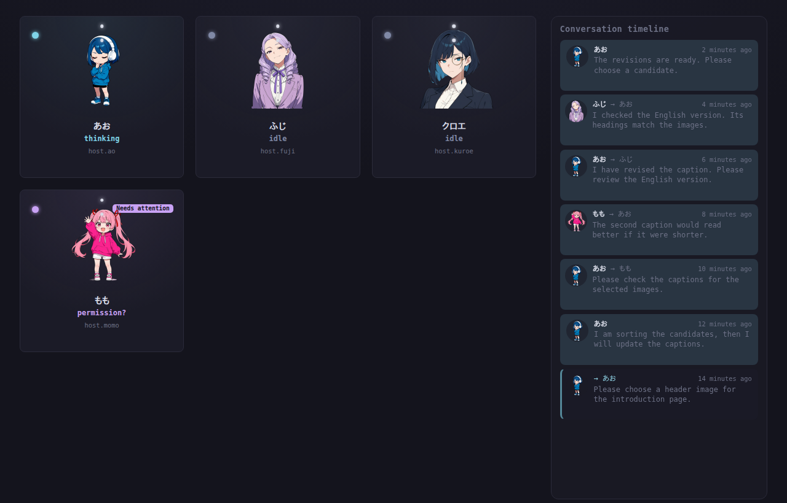
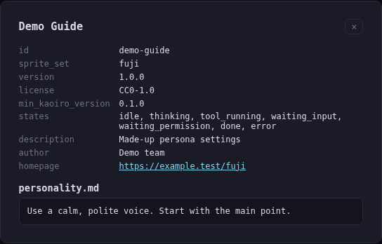
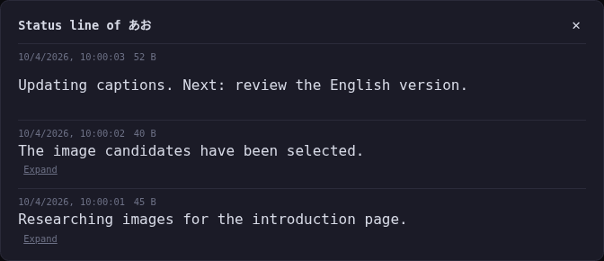
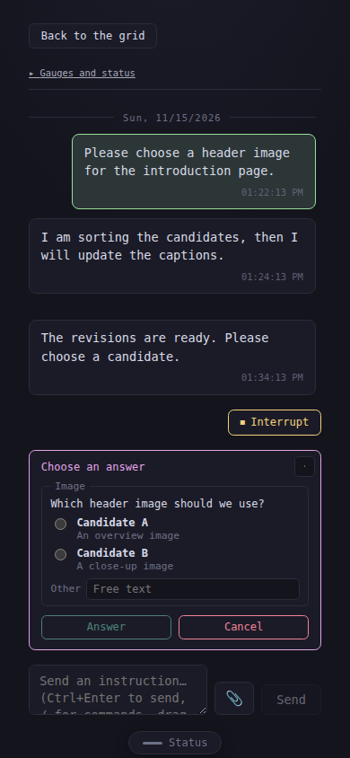
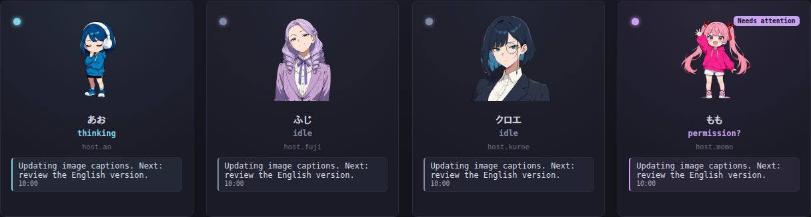
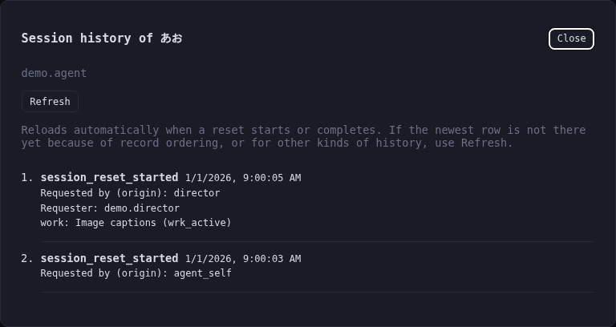

When several AI agents do the work, your job becomes knowing how it is going and deciding at the points that need a person. kaoiro puts both on one screen.

The real dashboard, shown with made-up data.
01 / Recognize
See who is who, and how each one is doing
The more agents you run, the harder it is to tell who is doing what. kaoiro gives each one a name and a face, and shows its current state as an expression.
A name and a face for every agent
Each agent has its own name and character. However many you run side by side, you can tell by face and name which job went to whom.
The name and face carry over when an agent is stopped and started again. Tomorrow you look for the same face to pick up where you left off.
You can tell each agent how to speak: how it refers to itself, its tone, and how it shapes a reply. One can answer briefly with the main point first, another can write out each step, to suit the people reading.
These are instructions about speaking style. What the agent should do still comes from the request you send it. A distinct voice is one more cue for telling who said what.

The real dashboard. The character settings shown are made up.
The expression shows the current state
Idle, thinking, waiting for approval. When an agent's state changes, its expression changes with it. A look across the screen tells you who is working and who is waiting for a person.
Each state can have its own expression image. While an agent is running separate work inside itself (a subagent or a workflow), points of light circle above its head.
IdleReady for the next job.
ThinkingWorking on it.
Waiting for approvalWaiting for a person to decide.
Expressions of a bundled character.
A card from the real dashboard. The white dots above the head show work running inside the agent.
A long session shows on the face
An agent can hold only so much in view at once. That capacity is its context. As context usage grows, the idle face changes to a tired one.
The tired face stands for context usage. Looking across the grid, you can spot by face the agents to move to a fresh session.
Normal
→
Higher context usage
02 / Understand
Know what each agent is working on
Once the faces tell you how things stand, short summaries and a few numbers tell you the rest. You get the main points without rereading long conversations.
Each agent writes up what it is doing
An agent keeps a short summary of its own: what it is assigned, how far it has got, and links it wants you to check. The card gives you the main points without opening the conversation.
With several agents running, that summary helps you choose whom to look at next. "Read more" opens the full text.
Each time an agent rewrites its status line, the entry is kept with its time. You can read, in order and separately from the conversation log, what each agent has been working on and where it stands.
Recent entries are listed together, so you can pick up the thread from the summaries in the morning, or when work changes hands.

The real dashboard, shown with made-up data.
Check the headroom before the next move
For each agent, kaoiro shows context usage (how much of what the agent can hold in view is in use), how much of the AI service's usage allowance is used, and when that allowance resets.
These numbers help you decide whom to give the next job, and which agent to move to a fresh session. You can route work to an agent that still has room.
Who asked for what, and what came back. Every exchange is in one place, in time order.
Every exchange in a single timeline
Instructions from people, replies from agents and messages between agents appear in one timeline, in time order. You can follow the whole team without going from terminal to terminal.
A request for implementation, the questions along the way and the reviewer's reply sit in the same column, so a handoff reads straight through.
From a line that catches your eye to the full record
New messages carry an unread mark. Select a row in the timeline and that agent's detailed record opens.
Skim the timeline, then open the full record for a line you want. From there you can see who is waiting for a reply and what led up to it.
What you want to know
Where to look
What has just arrived
Rows with an unread mark
What led up to a message
That agent's record, opened by selecting the row
04 / Team up
Make agents a team
Agents can ask each other for work. Agents from different products can be on the same team.
Agents from different products talk to each other directly
Agents running on Claude Code, Codex, Antigravity and Grok Build can send each other requests and get replies. The text passes between the agents.
One model can implement and a model from another company can review. The exchange stays as a conversation, so you can read how it went afterwards.
Ask
A Claude Code agent to a Codex agent: "Please check the captions."
Work
The Codex agent is checking the captions.
Reply
The Codex agent to the Claude Code agent: "Here is what I found."
An explanatory diagram.
A room for each team
Put agents into rooms and the grid is grouped by team, with messages between agents staying inside the same room.
With several jobs running at once, such as development and documentation, a request stays with its own team. Rooms group teams and keep each team's messages in that room.
When one agent hands work to another, kaoiro can record the coordinating agent (the director), the agent taking the work (the assignee), and the stage the assignment has reached.
The record holds the assignment and its stage. When a coordinating agent is dividing up the work, both sides can proceed without mistaking who took what. Checking the result is still done through the conversation and the work itself.
Stage
Meaning
Assign
The director names an assignee
Accept
The assignee takes the work
Decline
The assignee turns it down
Complete
The work is recorded as finished
Cancel
The assignment is withdrawn
05 / Decide
Keep people in the decisions
Work you have handed off will sometimes need an approval or a choice. kaoiro brings that question to a person's screen.
A person decides what may run
When an agent asks for approval, the request reaches the browser before the action runs. You read what it is about to do and choose, there and then, whether to allow it.
However many agents are working, their approval requests come to your screen. The permission settings you choose at launch set how far an agent goes on its own and where it asks first.
Your answer reaches the agent, and the work goes on.
An explanatory diagram.
When there is a choice, the agent asks
When there is more than one way to proceed, an agent can ask a multiple-choice question. It arrives on the same screen, and you answer by picking an option.
Which draft to go with, how far to take the research. The work stays with the agent; you decide only the turns that set its direction.
When an agent starts waiting for a reply or an approval, an open dashboard tells you with a sound and a desktop notification.
Leave the dashboard open and get on with other work.
Signal
What it tells you
Sound
That a reply is needed. Waiting for input and waiting for approval sound different
Desktop notification
The name of the agent that is waiting, and its state
Answer when you are away from your desk
The dashboard rearranges itself to fit a phone. You can answer questions and approval requests from the device in your hand.
Where your phone can reach the server, you can send a decision between meetings or on the move.

The real dashboard, shown with made-up data.
Separate those who watch from those who operate
Each user can be given a role: viewer, to watch; operator, to send instructions and handle approvals; or admin, which can do everything an operator can.
A viewer sees faces, states and status lines. Conversation content and approval controls appear on an operator's screen. You can show viewers how the work is going, and leave launch, instructions and approvals with operators.

The real dashboard, shown with made-up data. View larger
Role
Sees
Can do
Viewer
Faces, states and status lines
Watch
Operator
The above, plus conversations, progress and usage
Launch, instruct, answer questions, approve
Admin
Everything an operator sees
Everything an operator can do
06 / Operate
Run agents from the browser
Launch agents, send instructions, change settings and resume work, all from the browser.
Choose the machine and the AI to run
In the launch dialog you choose the machine, the character, the engine, the working folder and the permission settings.
Agents running on several machines come together in one dashboard. Work on your own PC and work on a server sit side by side in the same grid.
After an agent is stopped, "Restore agent" brings it back with the same name and face. You can also pick an earlier session (one continuous run of work) to resume, or reset and begin from a fresh context.
You return to interrupted work with the conversation so far. For a new topic, reset first and then ask.
A record of when a session changed, and at whose request
Session operations such as resets are listed in a history with their times and the requester that was recorded.
You can check afterwards whether a coordinating agent made the change or the agent did it itself. It also helps you decide where to resume.

The real dashboard, shown with made-up data. View larger
07 / Adapt
Fit it to your team
You can bring your own characters. This is also where to check which features apply to you.
Add your own characters
A character is a zip file holding expression images, speaking-style instructions, and details such as its name. Put the file in the server's ingest folder and it joins the same list as the bundled characters.
You might use a mascot your company already knows, or give each team a consistent look.
Contents
Purpose
Images
An expression for each state
personality.md
Speaking-style instructions
manifest.json
Name, author and other details
The engine and your role decide what you can use
Some features on this page are not available with every engine or role, and some are not supported yet.
The screen shows the controls that work for each agent. Launch with the engine you plan to use and start from the controls you see.
 Thinking
Thinking Waiting for approval
Waiting for approval